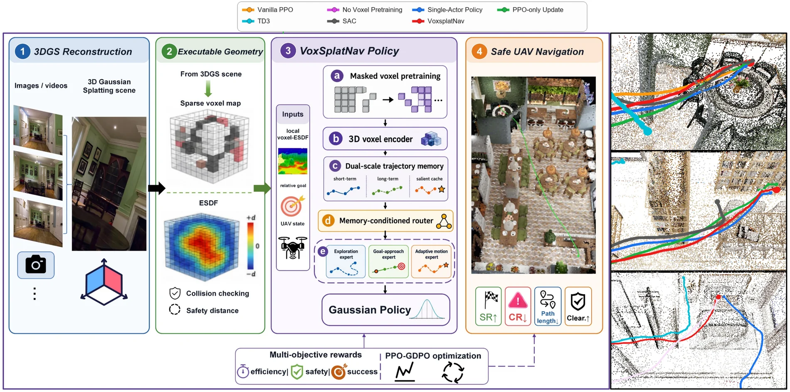
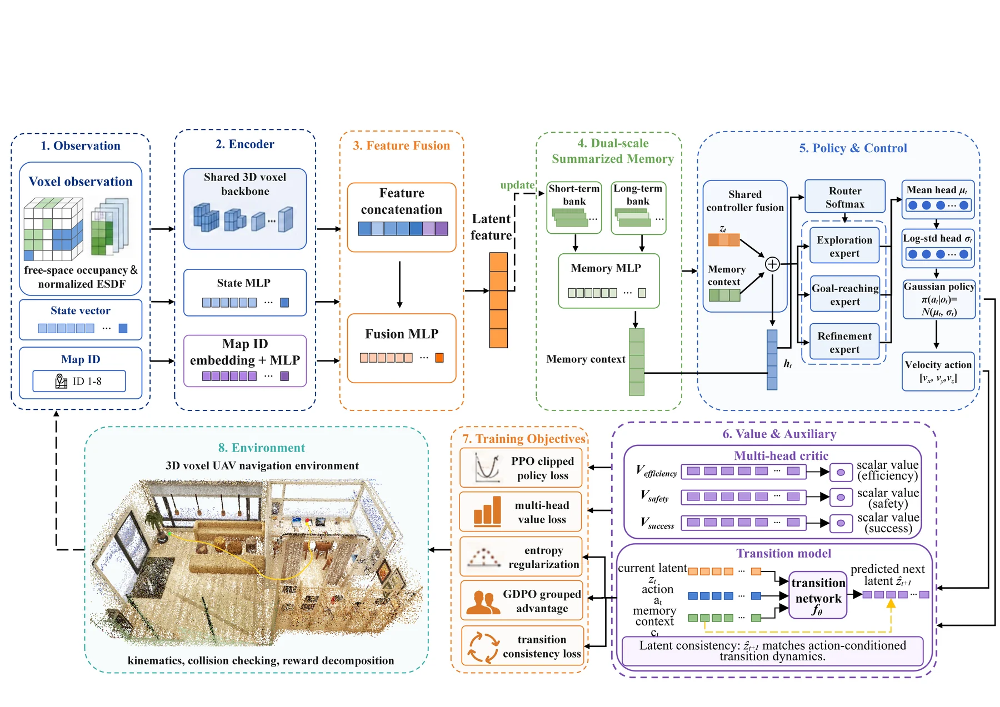
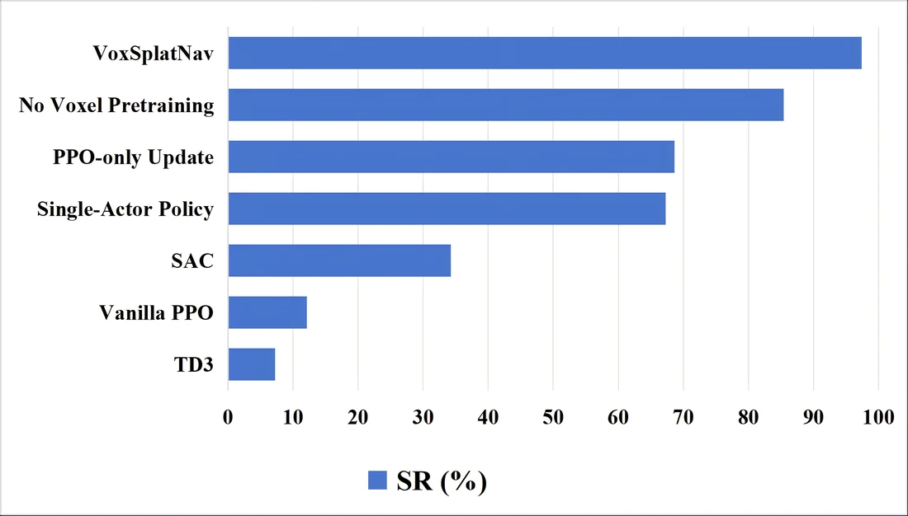
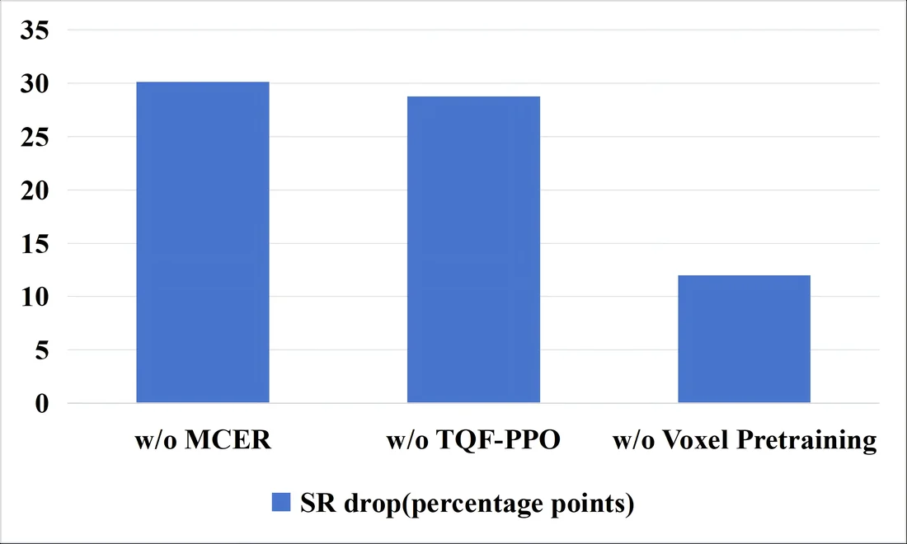
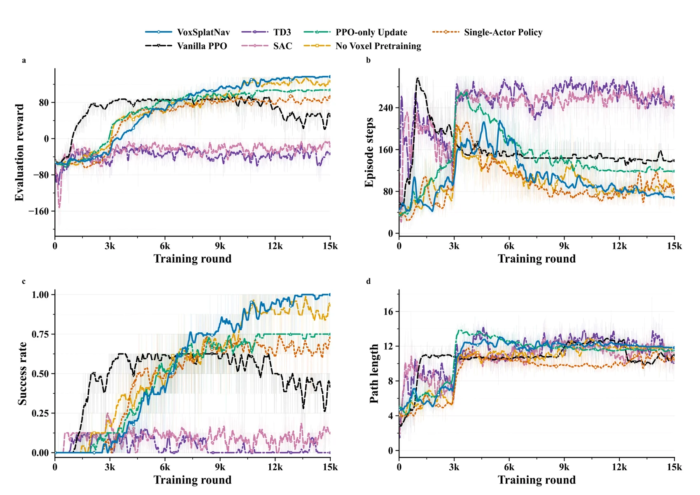
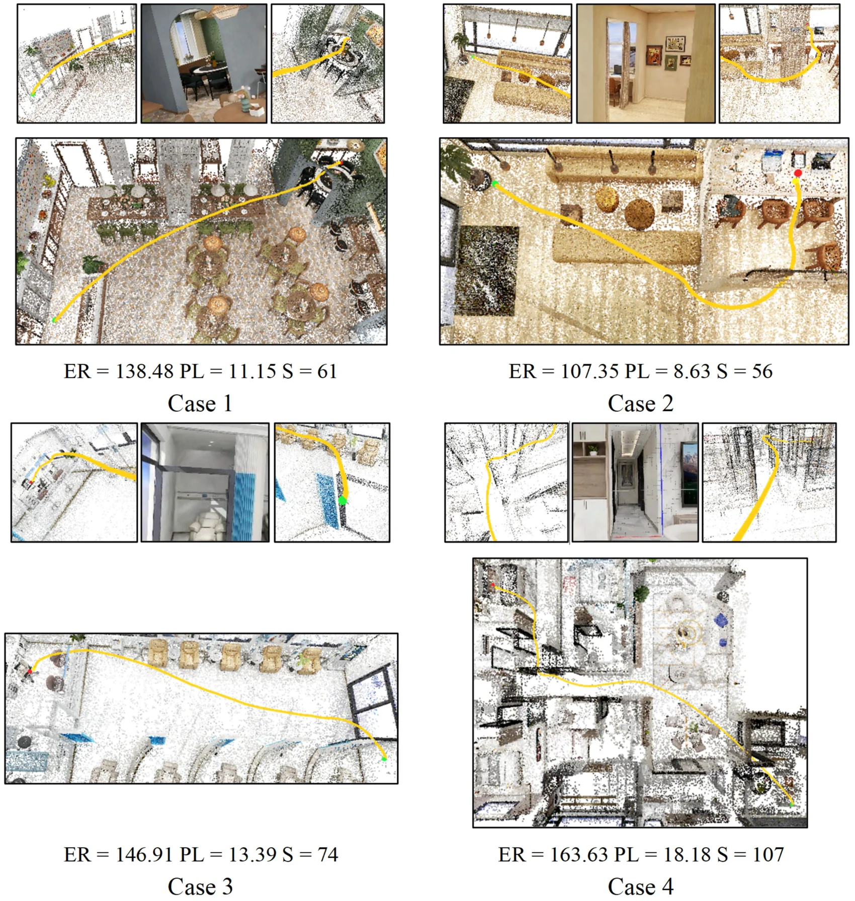

Offline workstation
Mobile image capture, SfM initialization, 3DGS optimization, depth/opacity rendering, volumetric fusion, voxel-ESDF construction, masked pretraining, and reinforcement-learning optimization.
From 3D Gaussian Splatting to Voxel-ESDF Policy Learning for Indoor UAV Navigation
3D Gaussian Splatting (3DGS) reconstructs detailed three-dimensional scenes from multi-view RGB images or video, providing an image-based route to obtaining navigation geometry without requiring dedicated LiDAR or RGB-D sensors. However, its native Gaussian primitives are designed primarily for rendering rather than collision queries or clearance-aware control. We present VoxSplatNav, a 3DGS-to-policy framework for indoor unmanned aerial vehicle (UAV) navigation. The framework converts a reconstructed Gaussian scene into a sparse voxel occupancy map and a Euclidean signed distance field (ESDF), which provide the geometric interface for collision checking, clearance estimation, and reinforcement learning interaction. A memory-conditioned expert-routing policy combines local occupancy and ESDF observations with goal-relative cues, UAV motion states, and dual-scale trajectory summaries to produce continuous three-dimensional velocity commands. For policy optimization, Trajectory-Quality Fusion Proximal Policy Optimization (TQF-PPO) combines component-wise step advantages with within-task trajectory-quality signals, so that updates account for both local decisions and complete rollout outcomes. Under random start–goal perturbations in eight 3DGS-derived indoor scenes, VoxSplatNav achieves an average evaluation reward of 131.35, a success rate of 97.38%, and a mean safety clearance of 0.1868 m. Relative to the strongest ablation variant, the method improves reward by 19.16%, success rate by 12.00 percentage points, and safety clearance by 37.56%. It also exceeds the best standard reinforcement learning baseline by 63.13 percentage points in success rate. These results support the use of an explicit occupancy-and-clearance interface, together with memory-conditioned routing and trajectory-level optimization, for learned UAV navigation in static reconstructed indoor environments.






Mobile image capture, SfM initialization, 3DGS optimization, depth/opacity rendering, volumetric fusion, voxel-ESDF construction, masked pretraining, and reinforcement-learning optimization.
Visual-inertial localization, local voxel-ESDF query, policy inference, safety checking, and bounded velocity-reference transmission to a conventional low-level flight controller.
Online depth sensing can supplement the static map, while command limiting, obstacle inflation, loss-of-localization fallback, hovering, and emergency landing remain independent safety mechanisms.
@article{voxsplatnav2026,
title = {VoxSplatNav: From 3D Gaussian Splatting to Voxel-ESDF Policy Learning for Indoor UAV Navigation},
author = {Anonymous authors},
journal = {ISPRS Journal of Photogrammetry and Remote Sensing},
year = {2026}
}